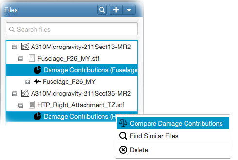

Generated damage contributions can be compared against each other. For this, right-click on multiple damage contributions
in the file tree and select - Compare Damage Contributions
from the popup menu as follows;

This will open the compare damage contributions input panel.
Here, you will have to select the type of contributions to compare (i.e. incremental, delta-p or delta-t). For incremental
contributions, it is also required to select the contributions to compare from the list below.
You can select the chart title naming source from this panel.